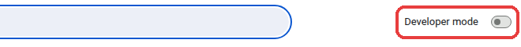
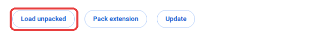
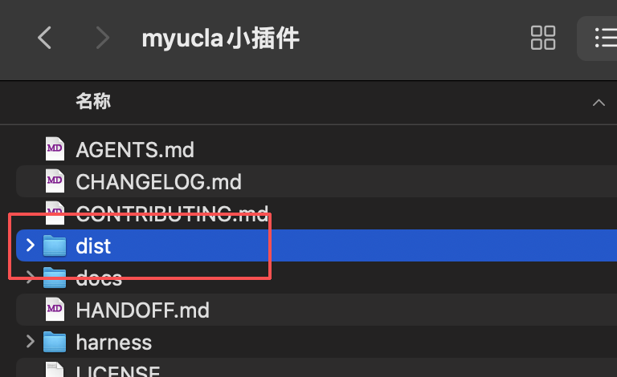
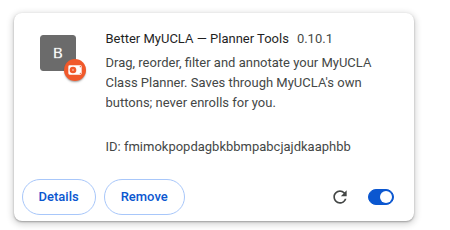
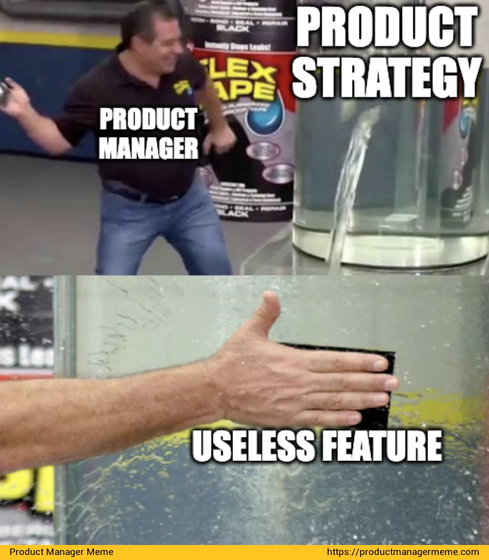

Drag classes around your Class Planner, instead of clicking the arrow one position at a time. 在 Class Planner 里直接拖动课程，不用再一格一格点那个小箭头。
Not made by, endorsed by, or affiliated with UCLA 非 UCLA 官方产品，与 UCLA 无关联

Rearrange as much as you like first. A bar at the bottom of the window keeps count, and Save then clicks MyUCLA's own arrows for you. 想怎么调就怎么调。窗口底部会有一条显示改了几门、大概要多久，点保存之后它才去帮你点 MyUCLA 自己的箭头。

About two minutes, in Chrome or anything built on Chrome. 大约两分钟。Chrome，或者任何基于 Chrome 的浏览器都行。
Download the latest version 下载最新版Unzip it somewhere permanent. Documents, not Downloads. Chrome loads it from this folder every time it starts, so deleting the folder uninstalls it. 解压到一个不会被你删掉的地方。放文稿，别放下载。Chrome 每次启动都从这个文件夹读取，删掉文件夹就等于卸载。
Open a new tab, type chrome://extensions in the address bar, and
press Enter.
新开一个标签页，在地址栏输入 chrome://extensions，回车。
Turn on Developer mode. The switch is in the top right corner. 打开开发者模式。开关在右上角。

Three buttons appear on the left. Click Load unpacked. 左上角会冒出三个按钮，点 Load unpacked（加载已解压的扩展程序）。

Open the folder you unzipped, select the folder named dist inside
it, and confirm. Select the folder itself, not the files inside it.
打开你刚解压的文件夹，选中里面那个叫 dist
的文件夹，确认。是选文件夹本身，不是进去选里面的文件。

It should now show up like this. 装好之后长这样。

Open your Class Planner at be.my.ucla.edu/ClassPlanner/ClassPlan.aspx, sign in as usual, and scroll down to the blue Class Plan bar. The new buttons are on every class. 打开 be.my.ucla.edu/ClassPlanner/ClassPlan.aspx，照常登录，往下翻到蓝色的 Class Plan 那一栏，每门课上就有新按钮了。
Two things to expect.两件事先说在前面。
Chrome warns about developer-mode extensions every time it starts. That is its standard notice for anything not installed from its store. Dismiss it. Chrome 每次启动都会提醒「请停用开发者模式扩展程序」。这是它对所有非商店来源扩展的标准提示，不是出问题了，关掉就行。
There is no auto-update. For a new version, unzip it over the same folder,
then press reload on the card in chrome://extensions. A different
folder loses your notes and settings.
没有自动更新。出新版本时，解压覆盖同一个文件夹，再去
chrome://extensions
点那张卡片上的刷新按钮。换个文件夹的话，你的备注和设置会丢。

Click the extension icon in the toolbar. The switch at the top puts the Class Planner back exactly as MyUCLA made it, immediately. 点浏览器工具栏上的扩展图标，最上面那个开关一关，Class Planner 立刻变回 MyUCLA 原本的样子。
The other switch is optional: MyUCLA counts only clicks as "still here", so reading your plan for fifteen minutes signs you out. Turn it on and scrolling counts too. 另一个开关是可选的：MyUCLA 只把点击当作「你还在」，所以光看不点，十五分钟就把你登出了。打开它，滚动也算数。
be.my.ucla.edu/ClassPlanner/ClassPlan.aspx.
只有一个页面：be.my.ucla.edu/ClassPlanner/ClassPlan.aspx。
This is an early version, and MyUCLA can change its pages at any time. When it does, this stops rather than guesses, so the worst case should be that it does nothing. 这是很早期的版本，MyUCLA 随时可能改自己的页面。真改了的话，它会直接停下而不是乱猜，所以最坏的情况是它不干活。
